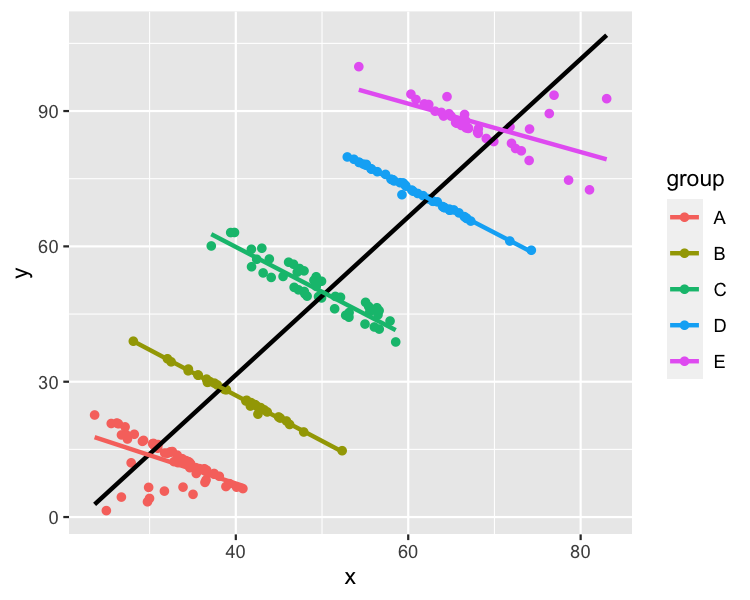

9.26: Wrapping up MLR
Learning objectives
describe the basics of the bias-variance tradeoff
describe Simpson’s paradox
explain when it is useful to standardize predictors in linear regression
Classwise videos
These videos cover three miscellaneous topics to wrap up our conversation about linear regression.
If you have questions as you watch the videos, feel free to send me an email or slack message! I will address common questions at the beginning of class.
The first video introduces the bias-variance tradeoff. This is more relevant to machine learning than inferential statistical modeling, so you will learn more about it next semester. However, I want to go ahead and introduce the concept.
The second video discusses Simpson’s paradox. This relates to the concept of confounding and emphasizes the importance of using multiple linear regression rather than simple linear regression. The video also covers tidyverse functions group_by() and count() which will be useful as you explore data.
Finally, see this tutorial on standardizing predictors. Focus on the z-score and centering, and the sections on when and when not to standardize. Note that this is much more relevant when prediction is the goal. Standardizing predictors changes the interpretation of the coefficient estimates; therefore, when inference/interpreting estimates the goal, we generally do not standardize.
Textbook
Bias-variance tradeoff: ISLR 2.2.2
Application Exercise
Simpson’s Paradox
- Air travelers would like their flights to be on time. Airlines collect data about on-time arrivals and report them to the Department of Transportation (DoT). Here is one month’s data for flights for two airlines from five western cities.
| Airline | On time | Late |
|---|---|---|
| Alaska Airlines | 3274 | 501 |
| America West | 6438 | 787 |
Calculate the percentage of flights that are on time for each airline and the percentage of flights that are late for each airline.
Based on the calculated percentages, which airline has the better on-time record?
In the table below, the data are broken down by city.
| City | AA - on time | AA - late | AW - on time | AW - late |
|---|---|---|---|---|
| Los Angeles | 497 | 62 | 694 | 117 |
| Phoenix | 221 | 12 | 4840 | 415 |
| San Diego | 212 | 20 | 383 | 65 |
| San Francisco | 503 | 102 | 320 | 129 |
| Seattle | 1841 | 305 | 201 | 61 |
| Total | 3274 | 501 | 6438 | 787 |
Compute the percentage on-time and percentage late values for each airline and city
Which airline has the best on-time record for each city?
Los Angeles:
Phoenix:
San Diego:
San Francisco:
Seattle:
Explain why this is an example of Simpson’s paradox
- Explain how the following image relates to Simpson’s paradox. 
- Simpson’s paradox with COVID vaccination data
References
Simpson’s paradox airline activity: http://facweb.cs.depaul.edu/brewster/lsp121/Files/Activity%206-ans.pdf
Simpson’s paradox image: https://stats.stackexchange.com/questions/478463/examples-of-simpsons-paradox-being-resolved-by-choosing-the-aggregate-data
Key Takeaways
The key takeaway of this exercise is that aggregated data can mask the relationship between two variables that changes with the inclusion of a third variable. This is one reason that we do multiple linear regression instead of simple linear regression.
The exercise also helps to develop statistical literacy. When you see aggregated data/percentages in the news, consider if it might be misleading. Is there a third variable that would help to shed light on the relationship between the two variables?